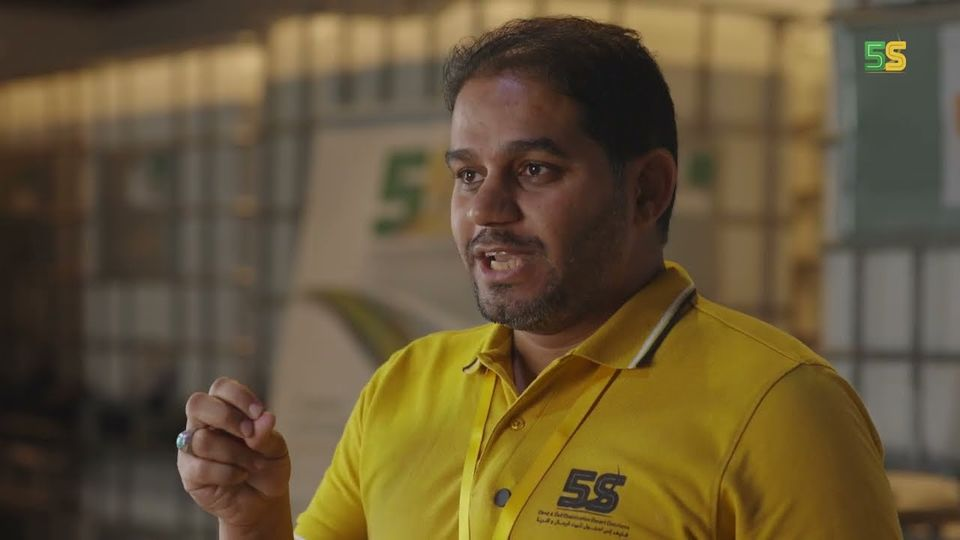
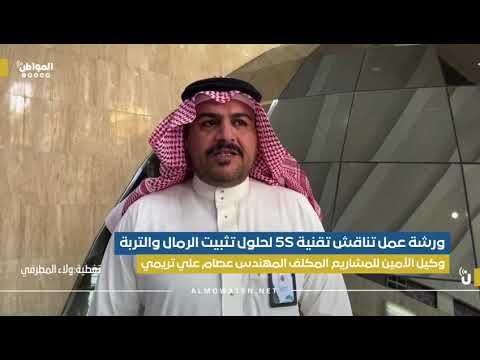
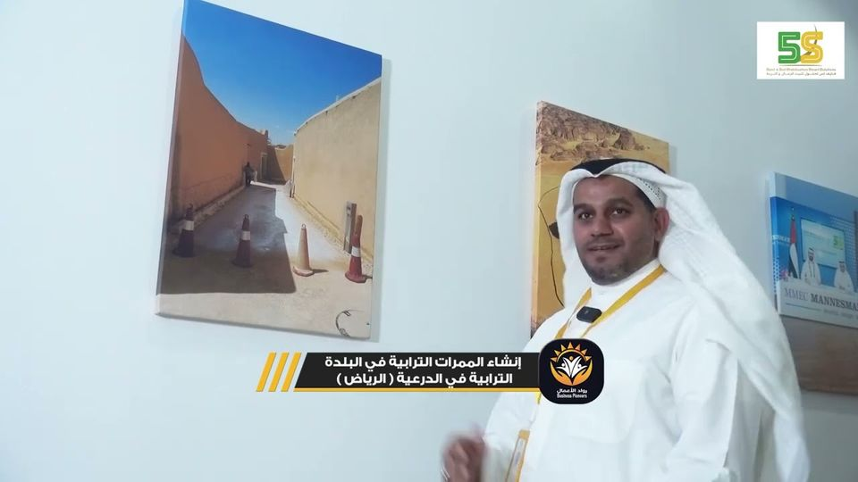
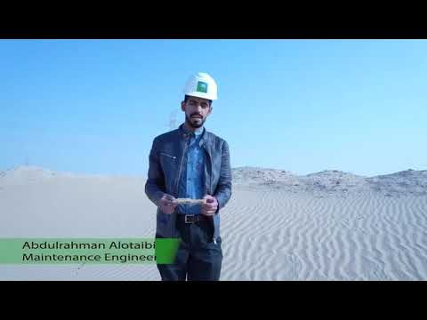
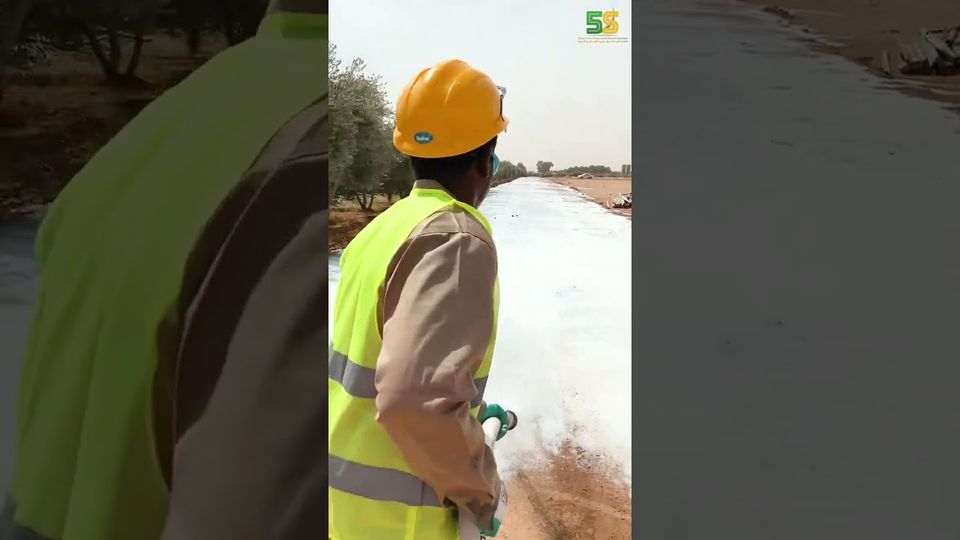
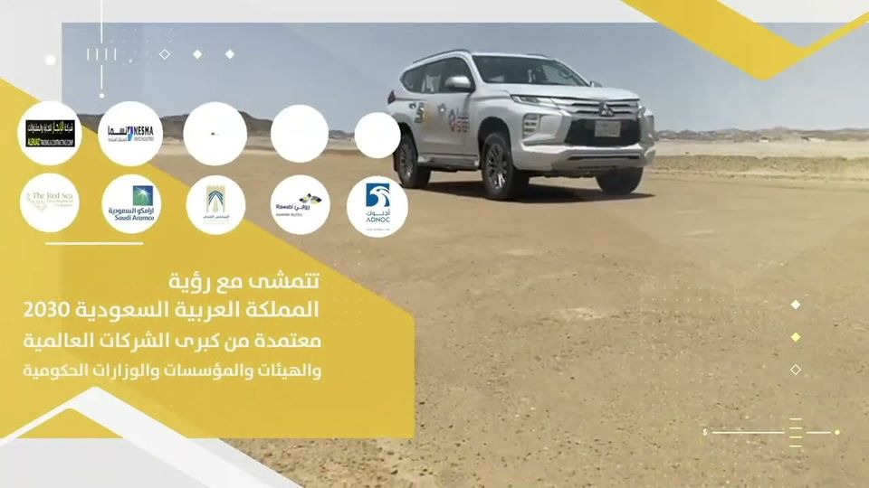
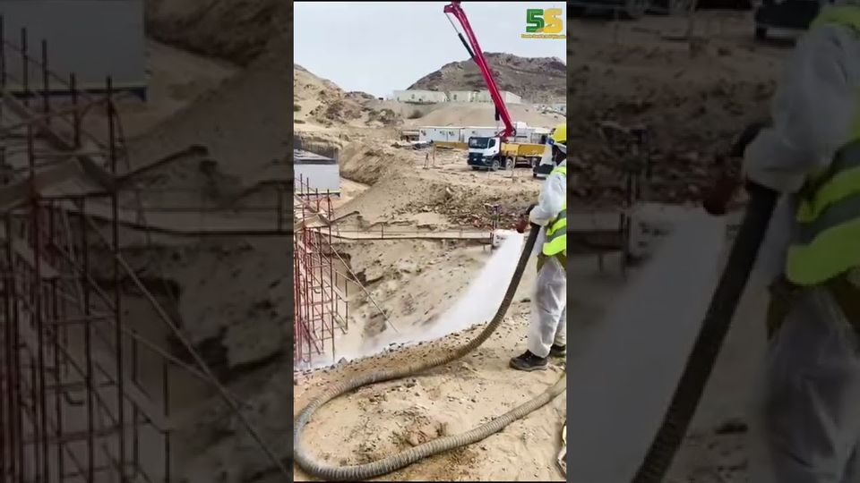
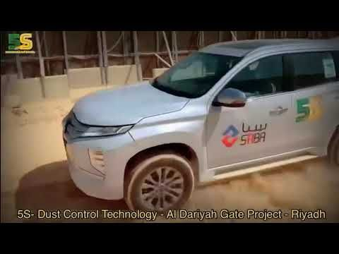
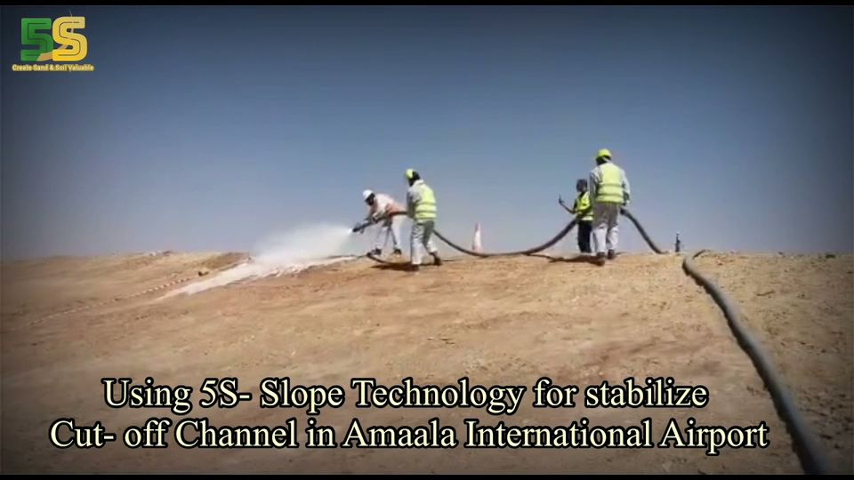

المركز الإعلامي
فيديوهات وصور ومقالات
تابع مشروعات فايف إس وتقنياتها وأحدث ما نشرناه عن تثبيت الرمال والتربة.
أحدث فيديوهات القناة الرسمية لفايف إس على يوتيوب.
زيارة القناة
ثورة في البناء | تقنية (5S) السعودية الصديقة للبيئة لإنشاء طرق وممرات دائمة

ورشة عمل | بعض من أسرار فايف اس «5S» في أمانة العاصمة المقدسة

فايف اس (5S) | أحد قصص النجاح المتميزة في ريادة الأعمال في المملكة والشرق الأوسط

ماذا قالت آرامكو عن «فايف اس (5S)»؟ | What did Aramco say about 5S?

مزرعة الطماطم أجمل مع فايف اس للطرق الترابية (5S)

فايف اس - أقوى وأفضل مثبت للرمال والتربة في المملكة والشرق الأوسط (5S)

ثبتها وارتاح: تثبيت المنحدرات في مشروع البحر الأحمر | Slope Protection in RedSea Project

اختراع سعودي مذهل يمنع الغبار المتصاعد بالطرق في مشروع بوابة الدرعية (5S-Dust Control)

ابتكار جديد لتثبيت أطراف مجرى المياه باستخدام تقنيات فايف اس في مطار أمالا الدولي
صور من مشروعاتنا الميدانية. اضغط على أي صورة لعرضها بحجم أكبر.


مقالات عن تثبيت الرمال والتربة وتطبيقاتها.

السيطرة على الغبار في مواقع الإنشاء والتعدين: لماذا لا يكفي رش المياه؟
يعتمد كثير من المواقع على صهاريج المياه لإخماد الغبار، لكن أثرها يزول بسرعة. نقارن بين رش المياه والمعالجة السطحية الرابطة من حيث الفعالية والتكلفة والبيئة.
اقرأ المقالكيف نحمي الطرق والمنشآت من زحف الكثبان الرملية؟
تتحرك الكثبان الرملية بفعل الرياح فتغطي الطرق وتعطل المنشآت. نستعرض أسباب الظاهرة وأهم وسائل الحد منها، ودور السواتر المعالجة في حماية المسارات.
اقرأ المقال
أهمية تثبيت الرمال والتربة في مشاريع البناء
تعد صناعة البناء والتشييد قطاعًا بالغ الأهمية يتطلب العناية بالتفاصيل والدقة والالتزام باللوائح الصارمة، وأحد أساسياتها ضمان السلامة الهيكلية بمعالجة التربة وتثبيتها بشكل سليم.
اقرأ المقال